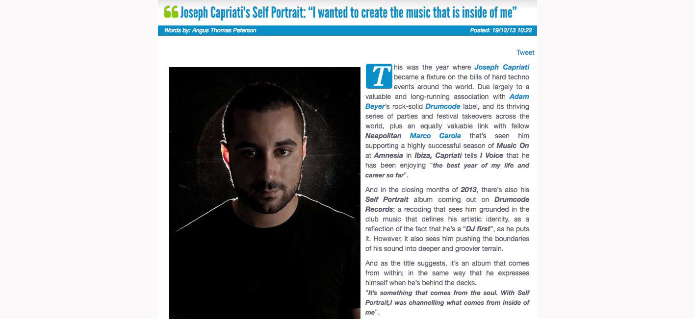
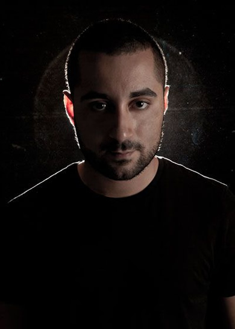
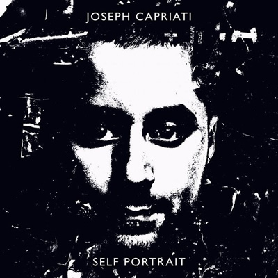
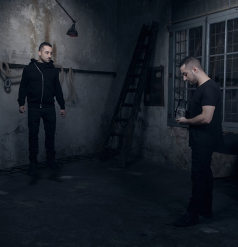

Joseph Capriati's Self Portrait: “I wanted to create the music that is inside of me”
{kind=link}

This was the year where Joseph Capriati became a fixture on the bills of hard techno events around the world. Due largely to a valuable and long-running association with Adam Beyer’s rock-solid Drumcode label, and its thriving series of parties and festival takeovers across the world, plus an equally valuable link with fellow Neapolitan Marco Carola that’s seen him supporting a highly successful season of Music On at Amnesia in Ibiza, Capriati tells I Voice that he has been enjoying “the best year of my life and career so far”.
{kind=link}

And in the closing months of 2013, there’s also his Self Portrait album coming out on Drumcode Records; a recoding that sees him grounded in the club music that defines his artistic identity, as a reflection of the fact that he’s a “DJ first”, as he puts it. However, it also sees him pushing the boundaries of his sound into deeper and groovier terrain.
And as the title suggests, it’s an album that comes from within; in the same way that he expresses himself when he’s behind the decks.
“It’s something that comes from the soul. With Self Portrait,I was channelling what comes from inside of me”.
When I Voice caught up with Joseph Capriati, he was Berlin for a few days; landing to play alongside Adam Beyer and his other label cohorts at the Drumcode Total party at the iconic Berghain, which saw them taking over the club from midnight Saturday until Monday morning.
How was your gig at Berghain on the weekend?It was incredible. It was the fifth time I’ve played there, and each time you understand more and more that club. Although you never finishing learning what is Berghain, and the techno mentality there. It’s incredible, it’s something different than normal. You have to really be ready to understand what kind of techno party this is; it’s not the same as when you go at a festival or a normal club. It’s a certain mentality.
I also saw you and Adam Beyer perform at the Awakenings party during Amsterdam Dance Event (ADE) in October, and that was definitely a different kind of event.When you’re playing in other places that is not Berghain, you have to think also what the people want. At Berghain, if you are a techno DJ then you have free expression, you can play whatever you want. When I play the Berghain, it is really my spirit going out. It’s freedom.
Did you stick around at the club after your set?When we do Drumcode parties, it’s not like we’re doing a competition with each other. We are sharing a moment, sharing music together...Yes of course [laughs]. Until the end. Because every year we do Drumcode Total, and it’s like a friend reunion. So I stayed until the end.
Your relationship with Drumcode goes back until around 2008?Yes, around five years. It’s a big connection, because with Adam especially there is a real friendship now. The good thing about Adam is that he gave me always freedom and open doors, and he never tried to make me feel like the #2. If you work for somebody else at a label then this is what you will always be, but he doesn’t make you feel this at all. And for me, I get to make music with the people that I like to share it with. They are like my family, really. When we do Drumcode parties, it’s not like we’re doing a competition with each other. We are sharing a moment, sharing music together.
That’s why I like to continue to collaborate with him, and why I like to release my music on Drumcode Records. Because I don’t want my own label. Many people ask me why I don’t open my own label, but honestly I don’t need this. I just do records because I like to show the people what I have inside. But I don’t like to make too many records; my basic is that I’m a DJ, and I prefer to play rather than to be producing too much.
So what were you trying to achieve with your Self Portrait album?I started to decide to make an album around a year and a half ago, but I don’t like to plan things out too much, it’s not how I work. It took one year to produce it. I didn’t want to be in the studio everyday for one month, and maybe produce something that sounds very much the same. In one year, you can focus on different moods, on different musical inspirations.
{kind=link}

For me it’s much better if I do it over longer periods, particularly if you want to do different kinds of tracks, as I want to do. I started to produce it in October last year, and I’m just releasing it now. There were some delays, but that worked for me because I could listen over it later, have the time to work on it more and do some different things. I’m very happy with it now.
When I do an album, I don’t want to make it only techno, I also want to make it something different. On Self Portrait, the intro track is a lot more industrial and groovy, much more dark and dirty stuff. And the album itself, it has some downtemp, it’s not all just hard techno.
It still has a fairly strong dancefloor drive. Did you want to keep the focus on stuff that you would be able to play in your sets?It’s definitely something that I could play in my sets of course, but in different kinds of clubs. If you listen, there are some tracks that would work at Berghain, and some tracks for the afterhours, and others for the smaller clubs.
For Self Portrait, I wanted to create the music that is inside of me, and to create music that I can play everywhere that I DJ. I also wanted to insert something a little more experimental; this time only a few tracks, though next time I’d love to release a different kind of electronic album, rather than just techno. Perhaps with an alias, but not because I’m scared people are gonna judge me; more so I don’t confuse my audience.
This year seems to have been a particularly good year for you.This year has been the best year of my life, as well as of my career. I never stop to grow up. I’m young, and I’ve been playing techno since 2003. This year though, I really found myself, and a balance of what I want to play, and which kind of clubs I want to play.
This year was also the year that I played my residency in Ibiza, and I really got to play my sound. It means that something in Ibiza is changing; I played techno, maybe not the techno that I would play in Berghain, but I played techno that followed the groove of this island. And it worked.
I didn’t copy the headliner Marco Carola for instance, who was playing tech house on the terrace. That was the sound for that room, but I played in the main room, and I played my sound without thinking about, maybe it’s too hard or whatever.
I just put the BPMs down a little, and with a few tricks I made the people enjoy it. By the end of the summer, my room was completely full. People that even normally say, "Joseph you play too hard", they were there dancing.
Mauro Picotto was the first artist to bring me to Ibiza back in 2007. But to be properly in Ibiza was 2012, and Marco was the first to really trust me. It was a challenge though in the first year. Marco is a king in Ibiza, everyone wants to go and see Marco.
It was the first year of Music On, and the room was usually half empty, as DJs often wanted to play the same music that Marco was playing. He always told me, "Joseph play your sound, don’t copy me". And it worked; I started to play techno, and people who wanted something different came into the room, step by step more and more.
But the end of last year it was full, and this year was an incredible and outstanding. I think it was one of the parties of the year in Ibiza, it was full for the whole season.
It seems techno is stronger than it’s ever been at the moment. Have you seen a change in recent years, in terms of the audience demand for it?I have seen a big change, which has been the most important for me. There was a confusion in the music a few years ago, there was the whole minimal house movement, and this was where I started myself, funky influences with a Neapolitan touch, this is how I started to produce.
{kind=link}

But then of course I started to see a big confusion around the music, and people didn’t have a word to describe a genre. Minimal, tech house, funky… now it’s much more techno, house and tech house, and this is what I prefer. It has been a long process to reach this, and finally we’re back to the basics. I really see now the music is in the right position, and people know the difference.
How do you think techno itself has evolved in recent years?Techno now is much more for everyone. The BPM is slower, and it’s something much more clean than before. You can see also the reason why techno is coming back in Ibiza is because it’s becoming much more accessible. Even the cool girls of Ibiza can listen and enjoy. I even got a lot of comments this year, ‘wow I really love your music. Before I never understand what is techno.’ Maybe you don’t understand techno because you don’t know it, but it is nice they would come up to me and say, ‘wow you make me dance.’ It means it is much more enjoyable.
What is it like when you go home to Napoli now?It is incredible. The people in Napoli, they give you the max, or the minimum. There isn’t something in the middle. It’s incredible how they make me feel when I go back home, because they’re like wow, a Neapolitan is travelling the world and giving a name for techno in Napoli. So everybody is really proud. I feel very satisfied, and it makes me feel very proud to be a Neapolitan and to be working in what I’m doing, it’s amazing.
And you played a 12-hour set there recently?Yes, it was the first time I’d played for 12 hours, and I decided to do it in Napoli because this was the city that really trusted me from the beginning. And there, either they hate you or they love you, there is no middle, trust me. Many DJs tried to be loved in Napoli – but they’re extremists. So I think, I’m very lucky to be appreciated in my own town. There’s nothing better than being a patriot. Napoli is very much the spirit of my life and my career.